무선설비기사 (2023-03-11 기출문제)
1과목: 디지털 전자회로
1. 3초과 코드(exess-3 code)는 어떻게 구성하는가?
- 교정 해밍코드
- 검출코드
- 8421코드에 3을 더한 코드
- 8421코드에 1의 보수를 더한 코드
(정답률: 88%)
2. 다음 중 발진조건에 대한 설명으로 옳지 않은 것은?
- 궤환증폭기의 이득(A)과 궤환율 (B)의 곱이 1보다 작으면 발진 진폭이 감소한다.
- 궤환증폭시 입력신호와 궤환신호의 위상이 180° 차이가 난다.
- 증폭된 출력의 일부를 입력쪽으로 정궤환시켜야 한다.
- 발진이 지속될 수 있는 상태를 유지하기 위해서는 BA=1 조건을 만족해야 한다.
(정답률: 68%)

3. 다음 그림과 같은 클램핑 회로의 출력 파형은?
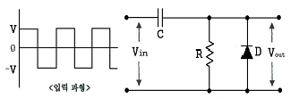
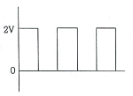
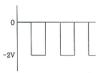
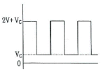
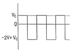
(정답률: 82%)
4. 정전압 회로의 특성으로 옳은 것은?
- 입력전류가 변할 때 출력 전압은 일정하지 않다.
- 출력전압이 변할 때 부하 전류는 일정하다.
- 주위온도가 상승할 때 출력 전압은 일정하다.
- 부하가 변할 때 입력 전압은 일정하다.
(정답률: 80%)
5. 다음 중 직렬형 정전압 회로의 특징으로 옳지 않은 것은?
- 효율이 좋다.
- 전압 안정화 회로로 널리 사용된다.
- 전압 안정계수를 작게 할 수 있다.
- 출력전압이 고정되어 있다.
(정답률: 54%)
6. 입력 주파수 512[kHz]를 T형 플립플롭 7개 종속 접속한 회로에 인가했을 때 출력 주파수는 얼마인가?
- 256[kHZ]
- 8[kHz]
- 4[kHz]
- 2[kHz]
(정답률: 77%)
7. 진폭변조에서 80[%] 변조하였을 때 상측파대의 전력은 반송파 전력의 몇[%]인가?
- 16[%]
- 32[%]
- 40[%]
- 48[%]
(정답률: 67%)
8. 다음그림의 회로 명칭은 무엇인가?
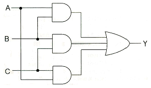
- 일치 회로
- 반 일치 회로
- 다수결 회로
- 비교 회로
(정답률: 82%)
9. 다이오드 저항이 부하 저항 RL에 비하여 매우 작다고 할 때, 전파 정류회로에서의 정류 효율 ɳ는 몇[%]인가?
- 40.6[%]
- 81.2[%]
- 62.4[%]
- 24.8[%]
(정답률: 78%)
10. PLD(Programmable logic device)로 분류되는 소자의 형태가 아닌 것은?
- GAL
- PAL
- PLA
- SRAM
(정답률: 81%)
11. 다음 중 부궤환 증폭기의 특징으로 옳지 않은 것은?
- 증폭도가 증가한다.
- 잡음과 일그러짐이 감소한다,
- 주파수 특성이 개선된다.
- 부하변동에 의한 이득변동이 감소한다.
(정답률: 62%)
12. 필터법에 의한 SSB변조기가 다단변조를 사용하는 이유는?
- 이득을 높이기 위하여
- 잡음지수 때문에
- 선택도 향상을 위하여
- 필터의 차단특성 때문에
(정답률: 64%)
13. 다음 중 MSS 조건에 대한 설명으로 옳지 않은 것은?
- Maximum Symmetrical Swing의 약자이다.
- 전류 동작점은 입력전압/교류부하저항+직류부항저항이다.
- 전압 동작점은 입력전압/교류부하저항+직류부항저항이다.
- 교류 부하선의 정중앙에서 동작점을 위치시켜 최대 출력 신호 증폭이 되는 조건이다.
(정답률: 58%)
14. 제너 다이오드는 어떤 영역에서 동작이 최적화 된 다이오드 인가?
- 항복영역
- 포화영역
- 차단영역
- 컷 오프영역
(정답률: 74%)
15. 다음 궤환회로에 대한 설명으로 옳지 않은 것은?
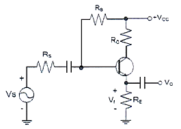
- 궤환으로 입력 임피던스는 감소한다.
- 궤환으로 전체 이득은 감소한다.
- 궤환으로 주파수 일그러짐이 감소한다.
- 궤환으로 출력 임피던스는 감소한다.
(정답률: 62%)
16. 궤환 증폭기에서 전달이득이 A, 궤환율이 ß일 때, ｜1-ßA｜=1 이면 증폭기는 어떤 동작을 하는가?
- 정류
- 부궤환
- 발진
- 증폭
(정답률: 73%)
17. 다음 논리회로의 기능으로 옳은 것은?
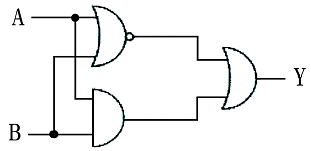
- NOR
- NAND
- Excluive OR
- Exclusive NOR
(정답률: 67%)
18. FM 검파 방식 중 주파수 변화에 의한 전압 제어 발진기의 제어 신호를 이용하여 복조하는 방식은 무엇인가?
- 계수형 검파기
- PLL형 검파기
- 포스터-실리검파기
- 비 검파기
(정답률: 77%)
19. 다음 회로와 같은 입출력 전달특성을 갖는 것은 무엇인가? (단, 다이오드의 문턱 전압은 무시한다.)
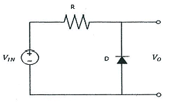
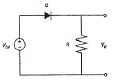
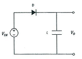
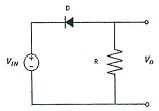
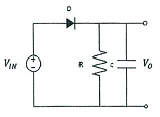
(정답률: 70%)
20. 다음 그림과 같은 발진회로의 명칭은 무엇인가?
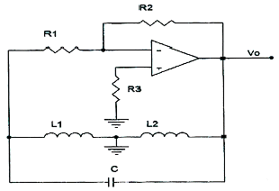
- 콜피츠 발진회로
- RC 발진회로
- 하틀리 발진회로
- 클랩 발진회로
(정답률: 80%)
2과목: 무선통신 기기
21. GPS 측위기법 중에서 DGPS(Differential GPS)특징에 대한 설명으로 틀린 것은 무엇인가?
- 정보통신 및 국방, 차량 기술에서도 활용 가능
- RTCM SC-104의 표준 형식 활용 가능
- 위성신호가 받을 수 없는 곳에서도 활용 가능
- 정밀 측량분야에서도 활용 가능
(정답률: 80%)
22. 안테나를 설계할 때 안테나의 요구조건으로 틀린 것은 무엇인가?
- 이득이 커야한다.
- 전압정재파비(VSWR)가 2배로 커야한다.
- 정합은 신호의 반사 손실이 최소화되도록 한다.
- 전, 후방비가 커야하고, 직진성 및 지향성이 좋아야 한다.
(정답률: 88%)
23. 대역폭이 3[kHz]가 되는 아날로그 신호 5개를 Nyquist 샘플링 조건에 맞추어 샘플링 후 샘플당 8비트로 표현하여 PCM-TDM신호를 만들었다. 이 신호를 전송하기 위한 최소 데이터율은 무엇인가?
- 15[kbps]
- 120[kbps]
- 240[kbps]
- 400[kbps]
(정답률: 59%)
24. DSB통신방식과 비교했을 때 SSB통신방식의 장점으로 적합하지 않은 것은 무엇인가?
- S/N비가 개선된다.
- 송신기의 소비전력이 적다.
- 점유주파수 대역폭이 2배로 넓다.
- 선택성 페이딩에 대한 영향이 적다.
(정답률: 79%)
25. 선박 자동 식별 장치(AIS: Automatic Identification System)를 표준사양과 선택사양으로 구분할 때 선택사양인 것은 무엇인가?
- 안테나부
- 표시부
- 제어부
- 위성위치 측정 시스템
(정답률: 65%)
26. 해안국의 인쇄전신 또는 데이터 전송의 송신설비에 사용하는 전파 중 주파수 편이 방식(FSK) 운융을 위한 송신설비 전파의 주파수 허용 편차로 맞는 것은 무엇인가? (단, 1992년 1월 2일 이후 설치 장치)
- 5[HZ]
- 10[Hz]
- 20[Hz]
- 30[Hz]
(정답률: 63%)
27. 슈퍼헤테로다인 수신기 혼신인, 영상주파수 혼신 경감대책으로 틀린 것은?
- 중간 주파수를 낮게 한다.
- 수신기를 완전히 차폐한다.
- 선택도를 높인다.
- 특정 영상 주파수에 대한 트랩 회로를 설치한다.
(정답률: 57%)
28. GNSS를 이용한 위성항법시스템의 오차 성분에 해당하지 않는 것은?
- 위성관련 오차
- 대기권 관련 오차
- 인위적 재밍 오차
- 수신기 관련 오차
(정답률: 76%)
29. 수신기의 성능을 나타내는 요소 중 충실도에 대한 설명으로 옳은 것은?
- 미약 전파 수신 능력
- 혼신 분리 제거 능력
- 원음 재생 능력
- 장시간 일정출력 유지
(정답률: 81%)
30. 다음 중 다중접속 기술 방식에 해당되지 않는 것은?
- TDMA
- FDMA
- BDMA
- OFDMA
(정답률: 85%)
31. 다음 중 다중접속 기술 방식에 해당되지 않는 것은?
- MFN(Multiple Frequency Network)
- M-NMFN(Multiple – National Multiple Frequency Network)
- DFN(Distributed Frequency Network)
- SFN(Single Frequency Network)
(정답률: 59%)
32. 전동칫솔, 무선 면도기 등에 활용되는 무선전력전송 기술은 무엇인가?
- 마이크로파 방식
- 자기 공명 방식
- 비접촉식 자기유도 방식
- 접촉식 자기공명 방식
(정답률: 66%)
33. 첨두포락선전력에 대한 설명으로 틀린 것은 무엇인가?
- 안테나에 공급되는 전력과 등방성 안테나에 대한 임의의 방향에서의 안테나 이득의 곱
- 정상상태에서 송신장치로부터 송신안테나계의 급전선에 공급되는 전력
- 변조포락선의 첨두에서 무선주파수 1주기 동안의 평균값
- 기호 PX이다.
(정답률: 60%)
34. 변조지수가 60[%]인 AM변조에서 반송파의 평균전력이 300[W]일 때, 하측파대 전력은 얼마인가?
- 9[W]
- 18[W]
- 27[W]
- 54[W]
(정답률: 71%)
35. GPS(Global Positioning System)시스템의 구성 요소가 아닌 것은?
- 위성
- 공용 수신기
- 지상관제
- 사용자
(정답률: 56%)
36. AM송신기의 발진부는 반송파를 만들어내는 중요한 부분이다. 다음 중 발진기의 요구 조건으로 맞지 않는 것은?
- 발진 주파수가 안정되고 정확할 것
- 주파수 변환이 고정적 일 것
- 발진 파형에 찌그러짐이 없을 것
- 후단 구동에 충분한 출력을 낼 것
(정답률: 80%)
37. 제어부의 연결 형태에 따른 정전압 회로의 종류에 해당되지 않는 것은?
- 제너 다이오드형
- 가변용량 콘덴서형
- 병렬 제어형
- 직렬 제어형
(정답률: 75%)
38. 다음 그림은 어떤 변조방식의 블록도를 나타내는가? (단, 그림에서 m(t)는 입력정보이고, ʃc는 반송주파수이다.)
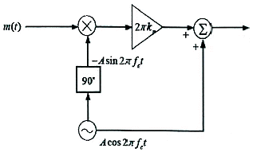
- 협대역 각변조 (Narrow Band PM)
- 광대역 진폭변조 (IDE Band AM)
- DSB – TC
- VSB
(정답률: 73%)
39. 이동통신에서 사용되는 다이버시티 기법이 아닌 것은?
- 공간 다이버시티
- 사이트 다이버시티
- 편파 다이버시티
- 시간 다이버시티
(정답률: 81%)
40. 무선설비 운용을 위한 전원 설비에 대한 설명으로 옳지 않은 것은?
- 전압변동률이 정격전압을 기준으로 오차범위 +- 10%이내 유지
- 해당 무선국의 무선설비를 자공 시킬 것
- 무정전 전원 설비 또는 축전지로서 48시간 이상 상시 운용할 수 있을 것
- 즉각 최대 성능으로 사용할 수 있을 것
(정답률: 62%)
3과목: 안테나 공학
41. 다음 중 대지의 도전율이 나쁜경우나 동선 매설이 곤란한 곳에 적용되는 접지 방식은 무엇인가?
- 방사상 접지
- 심굴 접지
- 다중접지
- 가상접지
(정답률: 77%)
42. 다음 중 동축 급전선에서 제조 가능한 특성임피던스 범 위는 무엇인가?
- 10~20[Ω]
- 50~75[Ω]
- 200~300[Ω]
- 300~600[Ω]
(정답률: 74%)
43. 다음 중 빔(Beam) 안테나에 대한 설명으로 틀린 것은?
- 마크로니형, 텔레푼켄형 및 스텔바형 등이 있다.
- 지향성이 예리하다.
- 큰 복사전력을 얻을 수 있다.
- 주로 낮은 주파수(LF 대역 이하)에서 사용된다.
(정답률: 79%)
44. 다음 중 진행파 형 안테나로서 예리한 지향특성을 가지며 주로 단파고정국 또는 해안국의 송·수신용으로 사용되는 안테나는 무엇인가?
- 루프(Loop)
- 더블렛(Doublet)
- 디스콘 (Discone) 안테나
- 롬빅(Rhombic) 안테나
(정답률: 80%)
45. 다음 중 Loop 안테나의 설명으로 틀린 것은?
- 급전선과 정합이 어렵다.
- 효율이 나쁘다.
- 수평면내 8자형 지향특성을 갖는다.
- 대형으로 이동이 어렵다.
(정답률: 64%)
46. 도파관의 임피던스 정합 방법에 해당하지 않는 것은?
- Stub에 의한 정합
- 무반사 종단회로에 의한 정합
- 도체 봉(post)에 의한 정합
- 방향성 결합기에 의한 정합
(정답률: 63%)
47. 차폐는 잡음의 영향을 받는 전자회로나 기기의 장애를 방지하는 근본적인 방법으로서 정전차폐와 전자차폐로 구분된다. 아래 보기 중 정전차폐에 해당하는 항목만 고르시오.
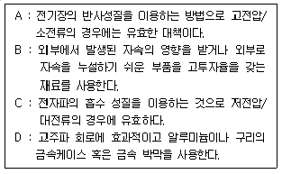
- A, B
- B, C
- B, C, D
- A, B, C, D
(정답률: 59%)
48. 차폐는 차폐체(쉴드)에 의해 발생하는 전기장이나 자기장의 세기가 감소하는 정도를 나타내는 것으로 데시벨(dB)의 단위로 차폐효가를 표현할 수 있다. 입사장의 전기장세기가 10[V/m]이고 이것이 차폐체로부터 통과한 투과파의 전기장 세기가 5[V/m]인 경우 차폐효과(S)는 약 얼마인가?
- 4[dB]
- 5[dB]
- 6[dB]
- 7[dB]
(정답률: 58%)
49. 접지안테나의 손상저항 종류가 아닌 것은?
- 접지저항
- 도체저항
- 유전체손실
- 부하저항
(정답률: 54%)
50. 전계강도측정을 하는 장소로 전파 무반사실이라고도 하며, 측정실주위의 벽을 전파의 흡수체로 만들어 반사파가 없도록 한 사이트는 무엇인가?
- 전파암실(電波暗室)
- 실드 룸(Shield Room)
- 오픈사이트(Open Site)
- 지하벙커(Underground Bunker)
(정답률: 77%)
51. 주파수 대역 구분 중 중파의 주파수 대역은 무엇인가?
- 30~300[KHz]
- 0.3~3[MHz]
- 3~30[MHz]
- 30~300[MHz]
(정답률: 61%)
52. 다음 중 포인팅 벡터의 크기를 나타내는 것은? (단, E: 저계의 세기, H : 자계의 세기, u : 투자율, ε : 유전율)
- EH
- uε
- H/E
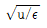
(정답률: 85%)
53. 다음 중 방향 탐지용 안테나로 쓰이지 않는 것은?
- Loop 안테나
- Adcock 안테나
- Beverage 안테나
- Bellini-Tosi 안테나
(정답률: 63%)
54. 다음 중 주파수가 높아짐에 따라 점차 세기가 작아지는 잡음은 무엇인가?
- 충격잡음 (산탄잡음, Shot Noise)
- 백색잡음 ( 랜덤잡음, White Noise)
- 핑크잡음 (플리커잡음, Pink Noise)
- 열잡음 (나이쿼스트 잡음, Thermal Noise)
(정답률: 70%)
55. 위상속도에 대한 설명으로 맞지 않은 것은?
- 일정 위상자리가 이동하는 속도를 말한다.
- 위상속도와 군속도의 곱은 광속의 제곱이 된다.
- 도파관 내에서 위상속도는 광속도보다 빠르다.
- 매질의 굴절률이 커지면 위상속도는 빨라진다.
(정답률: 62%)
56. 다음 중 정재파를 설명하는데 옳지 못한 것은?
- 한쪽 방향으로만 진행하는 파이다.
- 정합이 되어있지 않았을 때 생긴다.
- 정재파가 클수록 전송손실이 크다.
- 전류 전압의 위상은 선로상 어느 점에서도 동일하다.
(정답률: 73%)
57. 다음 중 Zeppeline 안테나의 특징으로 적합하지 않은 것은?
- 전압급전방식이다.
- 진행파형 안테나이다.
- 평형형 동조급전선을 사용한다.
- 임피던스 정합회로는 필요없다.
(정답률: 41%)
58. 안테나 Q(Quallity Factor)의 파라미터에 해당하지 않는 것은?
- 선택도
- 첨예도
- 양호도
- 안정도
(정답률: 40%)
59. 다음 중 전자파 장해가 발생하는 전자파 전달 요소가 아닌 것은?
- 발생원
- 반사체
- 감응체
- 전달경로
(정답률: 49%)
60. 주파수가 높아짐에 따라 도선의 바깥쪽으로 전류가 흐르려고 하는 성질을 무엇이라고 하는가?
- 표면효과(Skin effect)
- 와류효과(Vortex effect)
- 카르만효과(Karman effect)
- 도플러효과(Doppler effect)
(정답률: 75%)
4과목: 무선통신 시스템
61. 다음 중 지구국 안테나가 갖추어야 할 성능 조건으로 맞지 않는 것은?
- 고이득이어야 한다.
- 대역폭이 넓어야 한다
- 지향성 폭이 넓어야 한다.
- 잡음 온도가 낮아야한다
(정답률: 43%)
62. 다음 중 이동 통신 시스템에서 송신과 수신 신호 생성 시 사용되는 대역 확산(Spread Spectrum) 방식의 종류가 아닌 것은?
- 직접 시퀀시 확산
- 대역 역 확산
- 주파수 도약 확산
- 시간 도약 확산
(정답률: 76%)
63. ATSC 3.0 물리계층 전송 프레임 구성 순서를 바르게 나열 한 것은?
- Frame – Preamble – Bootstrap
- Frame – Bootstrap – Preamble
- Bootstrap – Frame – Preamble
- Bootstrap – Preamble – Frame
(정답률: 55%)
64. BER(Bit Error Rate)측정에 필요한 장비에 해당되지 않는 것은?
- BER 테스트기
- 다단계 감쇠기
- RJ-45/RS-232C 루프백케이블
- 스미스 선도
(정답률: 79%)
65. 스펙트럼 분석기 구성요소에 해당되지 않는 것은?
- 혼합기(Mixer)
- 톱니파발진기
- IF증폭기
- 게이트부
(정답률: 63%)
66. 지상에서 통신위성으로 통신하는 경우 통화지연은 약 얼마인가? (단, 위성고도는 35,863[km])
- 0.12초
- 0.24초
- 0.36초
- 0.48초
(정답률: 67%)
67. 다음 중 프로토콜 표준화에 대한 설명으로 틀린 것은?
- 표준화대상에 있어 대폭적인 개방성을 추구하고 있다.
- 광범위한 통신망과의 적응성을 확보하고 있다.
- ITU-T에서도 권고안(X-200 계열)에 OSI참조 모델과 동일한 내용을 권고하고 있다
- 부분적, 개별적 프로토콜 표준화에 역점을 두고 있다.
(정답률: 66%)
68. 비트율(bit rate)이 일정한 경우 16진 PSK의 전송 대역폭은 2진 PSK(BPSK)전송 대역폭의 몇 배 인가?
- 1/4배
- 1/2배
- 2배
- 4배
(정답률: 67%)
69. 무선랜(WLAN)의 표준에 대한 설명으로 틀린 것은?
- 802.11a는 2.4GHz 대역을 사용하며, 이상적인 조건에서 최대 54Mbps의 전송속도를 지원한다. 변조 방식으로 직교 주파수 분할 다중화(OFDM)방식을 사용한다.
- 802.11b는 2.4 GHz 대역을 사용하며, 최대 속도는 11Mbps의 전송속도를 지원한다. 변조방식으로는 직접 확산(DS) 방식을 사용한다.
- 802.11g는 802.11b보다 다소 빠른 54Mbs의 전송속도를 지원하며, 802.11b와 호환된다.
- 802.11n은 2.4GHz 대역을 사용하며, 기존의 세가지 a/b/g모드를 모두 지원한다.
(정답률: 60%)
70. AM수신기의 선택도를 측성시, 수신기에 희망신호와 동시에 다른 반송 주파수의 피변조 방해신호가 가해졌을 때 수신기의 비직선 동작으로 인하여 방해 신호파의 변조신호에 의하여 희망신호가 변조되어서 수신기의 출력에 나타나는 현상은 무엇인가?
- 상호변조 특성
- 혼변조 특성
- 감도 억압 효과
- 이변조 효과
(정답률: 77%)
71. 무선 LAN 시스템에 대한 설명으로 틀린 것은?
- AP(Access Point)는 무선 접속을 통해 이동단말과의 무선 링크를 구성하는 무선 기지국의 일종이다.
- AP(Access Point)는 기존 유선망과 연결되어 무선 단말이 인터넷 서비스를 제공한다.
- 무선 LAN은 CSMA/CA와 같은 방법으로 매체를 공유하여 사용한다.
- 유선 LAN에 비해 전송속도가 높다.
(정답률: 87%)
72. LoRa(Long Range) IoT기술의 변조방식은?
- CSS( Chirp Spread Spectrum)
- PSK(Phase Shift Keying)
- QPSK(Quadrature Phase Shift Keying)
- QAM(Quadrature Amplitude Modulation)
(정답률: 64%)
73. 데이터 통신에서 바이트 방식 프로토콜로 적합한 것은?
- ADCCP
- HDLC
- DDCMP
- SDLC
(정답률: 66%)
74. 재난안전통신망에서 제공되어야 할 핵심 요구기능으로 가장 거리가 먼 것은?
- 생존·신뢰성
- 신속·홍보성
- 재난대응과 보안성
- 운용효율과 상호운용성
(정답률: 83%)
75. 무선통신설비 설계시 수신설비가 충족해야 하는 조건이 아닌 것은?
- 수신주파수는 운용범위 이내 일 것
- 선택도가 작을 것
- 내부잡음이 작을 것
- 감도는 낮은 신호입력에서도 양호할 것
(정답률: 86%)
76. 무선 네트워크 환경에서 비정상 트래픽을 감시하고 차단하는 역할을 하는 보안장치는 무엇인가?
- IPS ( Intrusion Protection System)
- WEP ( Wired Equivalent Provacy)
- WIPS ( Wireless Intrusion Protection System)
- Firewall
(정답률: 63%)
77. 다음 WIFI EAP(Extensible Authentication Protocol) 인증방식에 대한 설명 중 틀린 것은?
- EAP – MD5(Message Digest algorithm 5) : ID/Password 기반의 사용자 인증 방식으로 128비트 해쉬(Hash) 알고리즘을 사용한다.
- EAP – TLS(Transport Layer Security): IP/Password 기반의 단말 인증방식으로 클라이언트 인증서와 서버 인증서를 통해 인증한다.
- EAP-TTLS(Tunneled Transport Layer Security) : 사용자 인증 방식으로 암호화된 터널(Tunnel)을 통해 클라이언트 인증서와 서버 인증서를 교환한다
- EAP – AKA (Authentication and Key Agreement): 보안 Key 방시의 단말 인증 방식이다.
(정답률: 61%)
78. 무선국 검사방법 중 성능검사 항목에 해당하지 않는 것은?
- 안테나 공급전력
- 주파수·불요발사
- 무선종사자의 배치
- 점유주파수 대역폭
(정답률: 82%)
79. 수신측에 두 개 이상의 안테나를 설치해서 수신 안테나에 유기된 신호 가운데 가장 양호한 신호를 선택하거나, 수신 신호들을 적절하게 합성하여 수신기에 제공함으로써 페이딩을 감소 또는 방지하는 방법은 무엇인가?
- 공간 다이버 시티
- 주파수 다이버 시티
- 각도 다이버 시티
- 루트 다이버 시티
(정답률: 73%)
80. 재난안전통신망의 핵심요구 사항에 해당하지 않은 것은?
- 단말 간 직접통신
- Carrier Aggregation
- 그룹통신
- 단독 기지국 운용
(정답률: 54%)
5과목: 전자계산기 일반 및 무선설비기준
81. 다음 중 통신공사시 감리의 역할이 아닌 것은?
- 기자재 납품업체 선정에 대한 지도
- 품질관리에 대한 지도
- 안전관리에 대한 지도
- 설계도서의 내용대로 시공되는지를 감독
(정답률: 81%)
82. C클래스 IP주소를 할당받는 기업에서 팀별로 네트워크를 나누어 사용하려고 한다. 한 팀에 16개의 서브넷 ID를 원할 경우 이 기업의 서브넷 마스크는 무엇인가?
- 255.255.255.0
- 255.255.255.18
- 255.255.255.192
- 255.255.255.240
(정답률: 67%)
83. 데이터 정제에서 영향 분석 및 수정을 위해 오류를 개발자에게 할당한 상태를 나타내는 용어는?
- Fixed
- Assigned
- Deferred
- Classified
(정답률: 71%)
84. 다음 사항 중 위탁운용 또는 공동사용할 수 있는 무선설비에 해당되지 않는 것은?
- 송신설비 및 수신설비
- 방송통신위원회가 정하는 실험국의 무선설비
- 무선국의 안테나 설치대
- 시설자가 동일한 무선국의 무선설비
(정답률: 71%)
85. 서비스 커버리지 범위가 가장 작은 네트워크는 무엇인가?
- LAN(Local Area Network)
- MAN(Metropolitan Area Network)
- WAN(Wide Area Network)
- PAN(Personal Area Network)
(정답률: 87%)
86. 다음 중 무선국에 대한 설명으로 틀린 것은?
- 실험국은 외국의 실험국과 통신을 하여서는 아니 된다.
- 아마추어국은 비상·재난구조를 위한 중계통신을 할 수 있다.
- 아마추어국은 제 3자를 위한 통신을 하여서는 아니된다.
- 실험국이 통신을 하는 때에는 암어를 사용하여야 한다.
(정답률: 69%)
87. 이진수 10010011과 10100001을 논리합 (OR)으로 맞게 변환한 값은?
- 00110010
- 10110011
- 10000001
- 10000100
(정답률: 86%)
88. C Class에 해당하는 유효한 IP주소는 무엇인가?
- 190.77.88.53
- 37.117.45.64
- 179.44.211.3
- 216.211.33.77
(정답률: 69%)
89. 전파법에 규정한 “심사에 의한 주파수 할당”시 고려사항으로 옳지 않은 것은?
- 전파자원 이용의 효율성
- 신청자의 재정적 능력
- 신청자의 기술적 능력
- 신청자의 주파수 사용 실적
(정답률: 66%)
90. 다음 중 TCP/IP 계층과 보안 프로토콜의 연결이 틀린 것은?
- 전송 – SSL,TLS
- 어플리케이션 – PGP,SSH
- 인터넷 – IP SEC, L2F
- 네트워크 인터페이스 – PPTP, L2TP
(정답률: 56%)
91. 준공검사를 받지 아니하고 운용할 수 있는 무선국이 아닌 것은?
- 50와트 미만의 무선설비를 시설하는 어선의 선박국
- 적합성 평가를 받은 무선기기를 사용하여 아마추어국
- 국가안보 또는 대통령 경호를 위하여 개설하는 무선국
- 공해 또는 극지역에 개설한 무선국
(정답률: 62%)
92. 방송통신기자재 등의 적합인증의 대상, 절차 및 방법 등에 관하여 필요한 세부사항은 누가 고시하는가?
- 관할 우체국장
- 중앙전파관리소장
- 한국방송통신전파진흥원장
- 과학기술정보통신부장관
(정답률: 85%)
93. 클라우드 서비스를 이중화하기 위한 설계원칙이 아닌 것은?(오류 신고가 접수된 문제입니다. 반드시 정답과 해설을 확인하시기 바랍니다.)
- HDLC 프로토콜
- 단일장애점(SPOF)제거
- 서비스 지속성 보장
- 결함 격리 반영
(정답률: 38%)
94. 다음 중 기억 장치의 주소를 기억하는 제어 장치는?(문제 오류로 보기 내용이 정확하지 않습니다. 정확한 내용을 아시는분 께서는 오류신고를 통하여 내용 작성 부탁 드립니다. 정답은 1번 입니다.)
- 프로그램 카운터(PC)
- 명령 레지스터(IR)
- 번지 레지스터(MAR)
- 기억 레지스터(MBR)
(정답률: 54%)
95. 감리원의 배치기준으로 옳지 않은 것은?
- 총공사금액 10억원 이상 30억원 미만인 공사: 중급감리원 이상의 감리원
- 총공사금액 30억원 이상 70억원 미만인 공사: 고급감리원 이상의 감리원
- 총공사금액 70억원 이상 100억원 미만인 공사: 특급감리원
- 총공사금액 100억원 이상 공사: 특급감리원(기술사 자격을 가진 자로 한정)
(정답률: 62%)
96. F8E, F9W, F9E 전파형식을 사용하는 초단파 방송국의 무선설비 점유주파수대역폭의 허용치는 무엇인가?
- 260[kHz]
- 500[kHz]
- 1.32[MHz]
- 6[MHz]
(정답률: 47%)
97. 무선국 업무의 분류 중 이동업무의 정의에 맞지 않는 것은?
- 이동국과 육상국 상호간
- 이동국 상호간
- 이동중계국 중계에 의한 이동국 상호간
- 육상국 상호간
(정답률: 40%)
98. 다음 중 네트워크 가상화의 종류에 해당하지 않는 것은?
- 호스트 가상화
- 링크 가상화
- 광통신 가상화
- 라우터 가상화
(정답률: 38%)
99. 다음 보기의 내용은 마이크로프로세서의 동작을 나타낸 것이다. 순서가 올바른 것은?
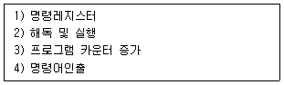
- 3 – 4 – 1 – 2
- 4 – 1 – 2 - 3
- 3 – 1 – 4 – 2
- 4 – 2 – 3 – 1
(정답률: 66%)
100. 다음 중 무선국이 갖추어야 할 개설조건에 속하지 않는 것은?
- 통신사항이 개설목적에 적합할 것.
- 개설목적의 달성에 필요한 최소한의 안테나공급전력을 사용할 것.
- 무선설비는 선박의 항행에 지장을 주지 아니하는 장소에 설치할 것.
- 이미 개설되어 있는 다른 무선국의 운용에 지장을 주지 아니할 것.
(정답률: 72%)